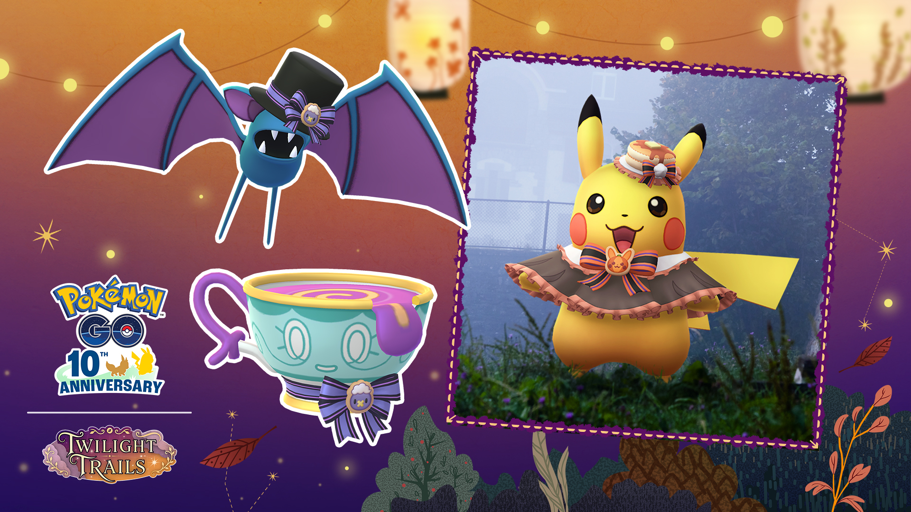

포켓몬고 핼러윈 2026 파트1 해트와 케이프 피카츄 만나는 법, 10월 27일 별1 레이드와 GO패스 보너스
달력에 10월 27일 화요일 오전 10시를 먼저 적어 뒀어요. 10월 16일 기준 11일 뒤인 27일 오전 10시에 시작하는 이번 핼러윈 파트1에는 모자를 쓰고 케이프를 두른 해트와 케이프의 피카츄가 새로 나오거든요. 그래서 미리 동선부터 짜 보고 있답니다.
공식 안내를 읽어 보니 이 피카츄는 야생 목록에 없고, 별1 레이드와 GO패스를 어떻게 굴리느냐가 이번 이벤트의 핵심이더라고요. 그래서 10시 시작에 맞춰 무엇부터 할지를 기준으로 풀어 볼게요 ㅎㅎ 아래 내용은 10월 16일 공식 발표 기준이라 시작 후에 바뀔 수 있어요.

톱 해트를 쓴 주뱃, 리본을 단 데인차, 해트와 케이프의 피카츄 순서예요.
출처: 포켓몬 GO 공식 공지(pokemongo.com)
포켓몬고 핼러윈 파트1은 언제부터 언제까지인가요?
핼러윈 2026 파트1은 10월 27일 화요일 오전 10시에 시작해서 11월 1일 일요일 오전 10시에 끝나요. 영문 공지는 현지 시간, 한국어 공지는 한국시간 10시로 적혀 있어서 한국에서는 10시 그대로 보시면 돼요. 아침 10시에서 아침 10시까지 정확히 5일이죠. 시작이 화요일 오전 10시라 출근·등교 시간대와 겹치는데요, 일요일 오전 10시에 끝나니까 토요일 밤까지 레이드와 리서치를 끝내 두는 게 안전합니다. GO패스 이용 마감과 리워드 만료일은 맨 아래 표에 따로 적어 뒀어요.
| 구분 | 일시(한국 시간 기준) |
|---|---|
| 이벤트 시작 | 10월 27일(화) 오전 10시 |
| 이벤트 종료 | 11월 1일(일) 오전 10시 |
| GO패스 자동 지급 | 10월 27일(화) 오전 10시 |
해트와 케이프의 피카츄는 어디서 만날 수 있나요?
해트와 케이프의 피카츄는 공식 야생 목록에는 이름이 없고, 공지에 이름이 적힌 만남 경로는 별1 레이드뿐이에요. 야생 쪽에는 아래 넷이 올라와 있는데, 공지에 «등»이 붙어 있으니 이 넷이 전부라고 단정하긴 어려워요. 신규 3종 중 야생 목록에 이름이 보이는 건 톱 해트를 쓴 주뱃뿐이고, 피카츄와 리본을 단 데인차는 별1 레이드에 이름이 올라 있어요.
- 톱 해트를 쓴 주뱃
- 해골몽
- 핼러윈 기념 모자 팽도리
- 핼러윈 기념 모자 둥실라이드
참고로 10월 초 가을 소풍 이벤트에 나온 주황색 한복 피카츄는 의상 쪽 이야기라 이번 피카츄와는 따로 움직여요.
별1 레이드 2종, 이로치 피카츄도 노릴 수 있나요?
별1 레이드에는 해트와 케이프의 피카츄와 리본을 단 데인차 2종이 나오고, 공지에는 두 포켓몬 모두에 «운이 좋으면 색이 다른 포켓몬을 만날 수도 있습니다!»라고 적혀 있어요. 확률은 적혀 있지 않지만, 이로치까지 노려 볼 수 있다는 얘기죠. 공식 이미지 속 피카츄는 머리 위에 팬케이크 모양 모자를 올리고 갈색 케이프에 주황 리본을 맨 모습이에요.
이벤트 기간 내내 도전할 수 있어서, 저는 첫날 한 번에 몰아치기보다 5일에 나눠서 틈틈이 돌리는 쪽으로 잡고 있어요. 레이드 목록에서 보스가 피카츄인지 데인차인지 보고 들어가시면 헛걸음이 줄어들 거예요. 어느 한쪽만 이로치로 나오라는 법은 없으니, 이로치를 노리는 분은 두 종 모두 돌려 보는 게 마음 편하죠.
GO패스 마일스톤 보너스는 뭘 두 배로 주나요?
GO패스 마일스톤 보너스는 포켓몬을 잡았을 때 받는 사탕과 별의모래가 대상이에요. 랭크 10에서 사탕 2배, 랭크 20에서 별의모래 2배이고, 디럭스 패스를 쓰면 두 가지 모두 3배로 올라가거든요. 패스는 10월 27일 오전 10시에 자동으로 지급되니까 따로 받으러 갈 필요가 없고, 이용은 11월 5일 목요일 오후 8시까지예요.
| 마일스톤 | 무료 패스 | 디럭스 패스 |
|---|---|---|
| 랭크 10 | 사탕 2배 | 사탕 3배 |
| 랭크 20 | 별의모래 2배 | 별의모래 3배 |
사탕 보너스는 랭크 10에 닿은 뒤부터 쓸모가 생기니까, 접속하자마자 랭크부터 올려 두는 쪽이 보너스를 오래 쓰는 길이죠. 사탕은 파워업과 진화에, 별의모래는 파워업에 들어가는 재화라서 의상 피카츄를 키워 볼 생각이시면 둘 다 쌓아 두는 편이 든든합니다. 보상 목록은 무료와 디럭스가 이렇게 갈려요.
- 무료 패스: 이벤트 테마 포켓몬 만남, 이벤트 테마 포켓몬의 사탕, 이상한사탕, 하이퍼볼, 그 외 더 많은 보너스
- 디럭스 패스: 추가 포켓몬 만남, 파티시에 상의·하의, 이상한사탕XL, 프리미엄 배틀패스, 그 외 더 많은 보너스
주황 앞치마가 달린 갈색 조리복 세트예요.
출처: 포켓몬 GO 공식 공지(pokemongo.com)
필드리서치와 서프라이즈 박스에서는 뭐가 나오나요?
필드리서치는 이벤트 한정 과제로 열리고 보상은 이벤트 테마 포켓몬을 만나는 거예요. 야생에 놓인 핼러윈 서프라이즈 박스에서는 테마 포켓몬을 만나거나 공지에 적힌 피카츄의 사탕·주뱃의 사탕·데인차의 사탕 등을 받을 수 있고, 운이 좋으면 이상한사탕이 나온다고 적혀 있어요. «등»이 붙어 있어서 이 셋이 전부라고 단정하긴 어려워요. 박스는 야생에 남겨 둔 것이라, 걸어 다니다 눈에 띄면 열어 보시면 돼요.
- 서프라이즈 박스에서 해트와 케이프의 피카츄를 직접 만나는지
- 레이드 이로치 확률과 피카츄 CP 범위
- 스페셜 리서치 진행 여부(공지에는 이벤트 한정 필드리서치만 나와요)
자주 묻는 질문
Q. 레이드로 만나는 피카츄는 이로치가 나오나요?
공지의 별1 레이드 두 포켓몬 이름 옆에 이로치 표시가 붙어 있어요. 확률 수치는 공지에 없어서 얼마나 자주 나오는지는 직접 돌려 봐야 알 수 있겠죠.
Q. 야생에 나오는 톱 해트를 쓴 주뱃도 이로치가 있나요?
네, 공지의 야생 목록에 오른 넷 모두 이로치 표시가 붙어 있어요. 해골몽까지 포함이라 야생을 돌다 색이 다른 포켓몬이 보이면 눈여겨봐 두세요. 이쪽도 확률은 적혀 있지 않네요.
10시 시작에 맞춰 접속한다면 이 순서예요
10시 시작에 맞춰 접속한다면 GO패스 랭크, 필드리서치, 별1 레이드 순으로 움직이고, 이로치까지 욕심내시는 분은 주말 하루를 레이드 데이로 비워 두세요. 다들 의상 피카츄 무사히 만나시길 바랄게요~
마감일은 이 두 날짜만 따로 적어 두면 됩니다.
| 날짜(한국 시간 기준) | 챙길 것 |
|---|---|
| 11월 5일(목) 오후 8시 | GO패스 이용 마감 |
| 11월 7일(토) 오후 8시 | 패스로 받은 리워드 만료 |
✔ 포켓몬 GO 같이 보기 좋은 내용
· 포켓몬고 지가르데 셀 루트 완료 리워드로 받는 법, 맵에서 안 모아도 되고 확률은 그대로
· 포켓몬 GO 깜눈크 부화데이 10월 17일 11시부터 17시, 알 부화 거리 절반 보너스 챙기는 법
· 포켓몬고 그푸리 처음 만나는 법, 가을 소풍 GO패스 패스 태스크와 향로 출현 기간 10월 13일부터
참고한 곳 (2026.10.16 기준)
· 포켓몬 GO 공식 뉴스 — 핼러윈 파트1
· Pokémon GO 공식 뉴스(영문)